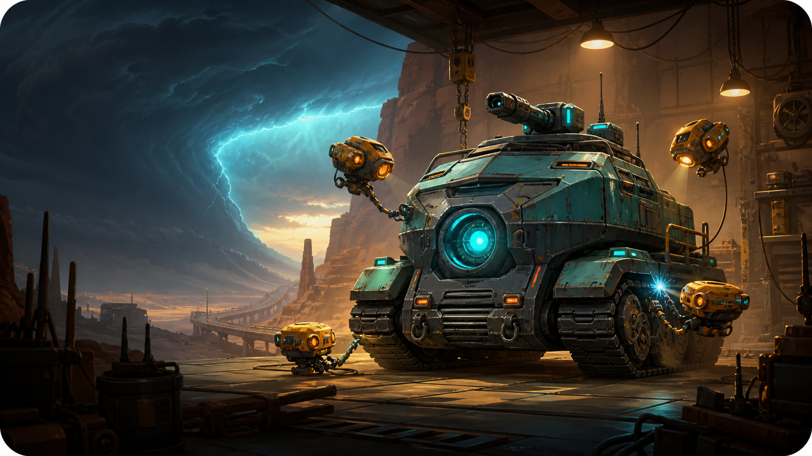
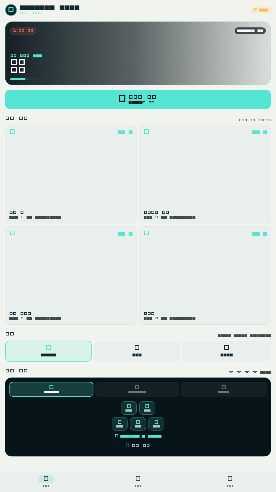
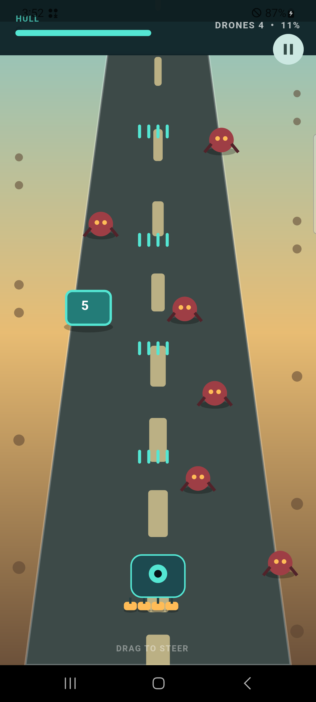

좌우 드래그로 편대를 움직이고 자동 사격, 회피와 위치 선정에 집중합니다.
PREMIUM OFFLINE ACTIONSTEER.
STEER.
RESCUE.
ENDURE.
한 손가락으로 이동 요새를 조종하고 증원 경로를 선택하세요. 광고와 추가 결제 없이 짧은 전술 원정을 반복하며 요새와 5기 분대를 성장시킵니다.

짧은 전투.
명확한 선택.
영구적인 성장.
상자를 사격하고 산술 게이트를 선택해 드론 편대를 늘립니다.
차체, 무장과 전술 분대를 강화합니다. 모든 기록은 기기에 저장됩니다.
실제 실행 화면


한 번 구매하는 완전판
광고, 구독, 확률형 아이템, 인앱 구매, 계정 가입과 필수 네트워크 연결이 없습니다.